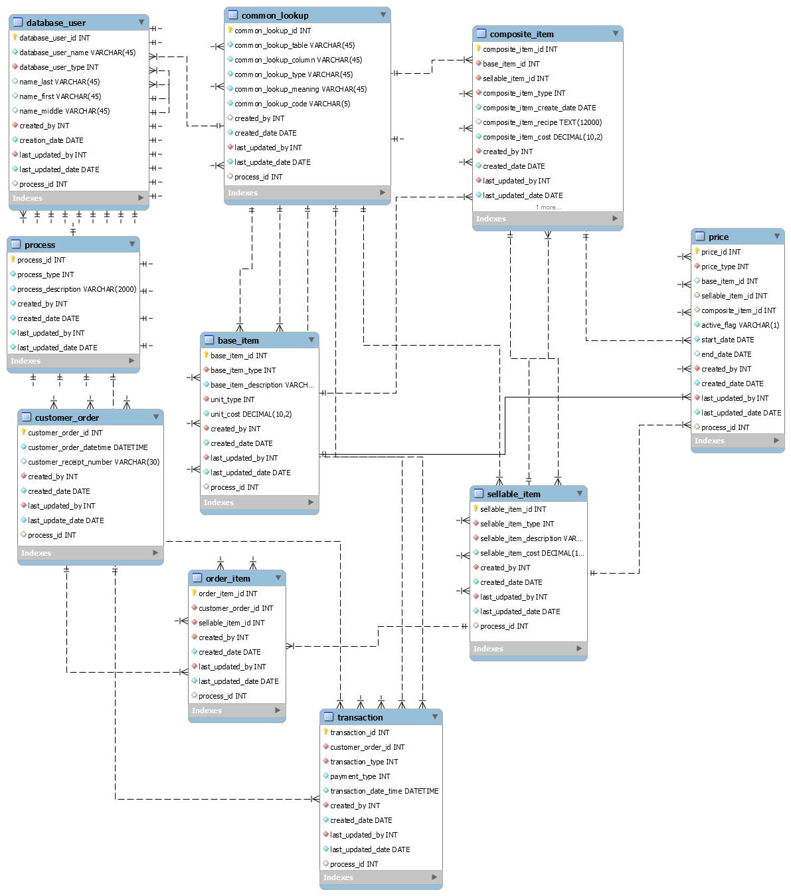

RestaurauntDB example
Below is an example of a database I created in Microsoft SQL Server. I prepared the ERD in MySQL Workbench, as the tools in that application are a bit more intuitive for modeling purposes. You can find the scripts listed in the T-SQL page.
